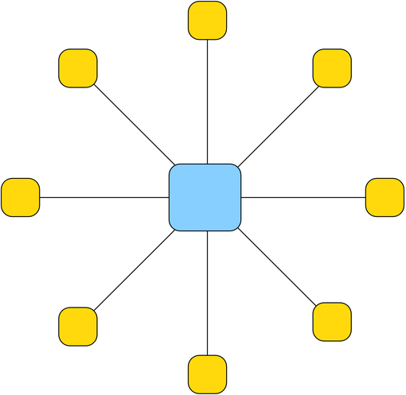
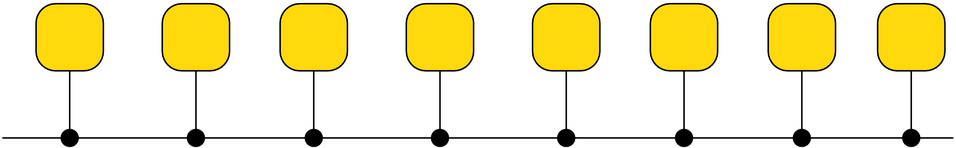

Nome |
Immagine |
Descrizione |
Vantaggio/Svantaggio |
Rete punto a punto |
 |
Una rete punto a punto è realizzata unendo ogni device della rete con un cavo. |
1- Ogni nodo può parlare direttamente con tutti gli altri.
2- E' una rete molto veloce.
1- Il costo della rete è molto alto.
2- Sono necessari dei device speciali, cioè con tante schede di rete. |
Rete a stella |
 |
Una rete a stella funziona collegando tutti i device a un punto centrale. Questo nodo centrale può essere un computer speciale o un hub o uno switch. |
1- è una rete molto semplice.
2- E' una rete molto economica.
1- Nel caso si rompa il computer centrale tutti gli altri nodi smettono di comunicare.
2- Tutte le comunicazioni passano nel nodo centrale che se non è ben programmato lascia vedere i dati agli altri nodi.
|
Rete ad anello |
 |
Prevede che ogni nodo sia collegato ad altri due. |
1- E' una rete semplice.
2- E' una rete semplice da espandere.
1- La rottura di un nodo blocca tutta la comunicazione.
2- Per parlare tra due nodi potrebbe essere necessario passare per tutti gli altri nodi della rete.
|
Rete a bus |
 |
La rete a bus è basata su un cavo speciale che collega tutti i device |
1- E' una rete semplice da utilizzare
2- E' economica
1- La rottura di un terminatore può bloccare la rete
2- La rottura del bus può bloccare tutta la rete |
Rete ad albero |
 |
E' una rete in cui sono definitedelle gerarchie cioè un nodo può essere padre di altri nodi.
Ogni nodo è collegato ad almeno un altro nodo che può vedere pezzi di rete maggiori |
1- E' adatta a gestire piccoli gruppi che devono condividere risorse
2- La rottura di un nodo consente ad altri pezzi di rete di funzionare
1- E' una rete complicata da realizzare e mantenere
2- L'aggiunta di un nodo può richiedere configurazioni complesse
|
Nome |
Immagine |
Descrizione |
Vantaggio/Svantaggio |
CAN |
 |
campus area network è una rete che serve a collegare edifici relativamente vicini. normalmente collega sotto reti lan |
vantaggio
1)NORMALMENTE PIù SICURA DI UNA LAN
2)CONSENTE LA CONDIVISIONE DI RISORSE AZIENDALI SENZA ACESSO A INTERNET
svantaggio
1)è NORMALMENTE PIù COSTOSA
2)è NORMALMENTE PIù COMPLESSA DA GESTIRE
|
LAN |
 |
una Local Area Network (LAN) (in italiano rete in area locale, o rete locale) è una rete informatica di collegamento tra più computer, estendibile anche a dispositivi periferici condivisi, che copre un'area limitata, come un'abitazione, una scuola, un'azienda o un complesso di edifici adiacenti |
vantaggio
1)rete semplice
2)economica
svantaggio
1)ADATTA SOLO PER PICCOLE AREE
2)SICUREZZA LIMITATA
|
WLAN |
 |
è una rete che si basas sull'uso di componenti wi fi |
vantaggio
1)rete semplice da realizzare e gestire
2)è la rete più economica
svantaggio
1)rete poco sicura
2)le prestazioni offerte non sono molto buone
|
wan |
 |
è una rete che copre regioni vaste della terra (wide area network |
vantaggio
1)consente di realizzare una rete parallela ad internet
2)rete sicura
svantaggio
1)costi elevatissimi
2)è una rete complicata da realizzare e da gestire
|
man |
 |
metropolitan area network è una rete che serve a collegare reti ad una distanza non molto elevata serve a colegare sotto reti una città |
vantaggio
1)consente di condividere risores eaziendali anche tra sedi diverse
2)è uuna rete sicura
svantaggio
1)è una rete complicata e costosa
2)non è sempre possibile realizzarla
|